New version of SERVO BM10. The battery capacity has been upgraded to 380mAh, (the old version was only 350mAh), and it supports more languages. Added blacklist, automatic call recording function, etc.
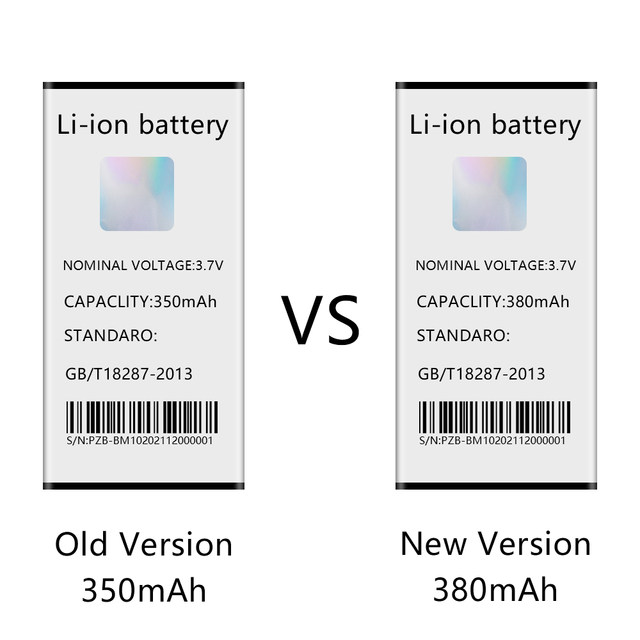
SERVO BM10 supports dual card dual standby. It can be used as mobile phone when inserting a nano SIM card, the size of the mobile phone is only 68mm*28mm*12mm, Easy to carry and operation, connect with smartphone/tablet via bluetooth. Sync contacts and call recordings, Used as a Bluetooth phone for making a call, listening to music
Basic Information
CPU ： MTK6261
RAM ：32MB
ROM ：32MB
External Memory ：Maximum support 16GB expansion
Network type ：GSM
Frequency ：GSM 850/900/1800/1900MHz
Bluetoth ：3.0 Version
Screen size： 0.66 inch
SIM Card Slot： Dual SIM,Dual Standby( 2 Nano SIM card )
TF card slot ：Yes
Micro USB Slot ：Yes
Additional Features ：，，Bluetoth,Alarm，
Product size ：68x 28 x 12 mm
Package size ：152 x 91 x 30 mm
Product weight ：0.022kg(including battery)
Language
English, French, Spanish, Danish, Polish, Portuguese, Italian, German, Malay, Indonesian, Dutch, Vietnamese, Turkish, Russian, Bulgarian, Arabic, Persian, Hebrew, Thai, Greek , Sweden, Croatia,
Accessories
1 x battery
1 x USB cable
1 x User manual
1 x Sling（Black ,Free Gift)
1 x Case(Including earplugs, ear hooks）
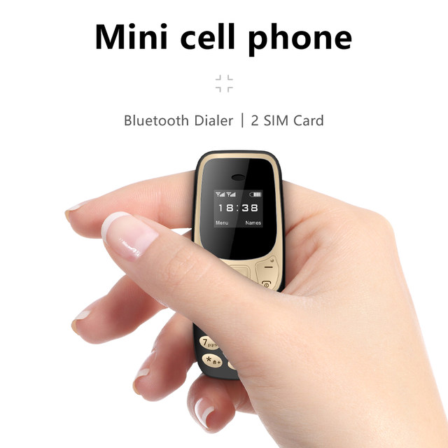
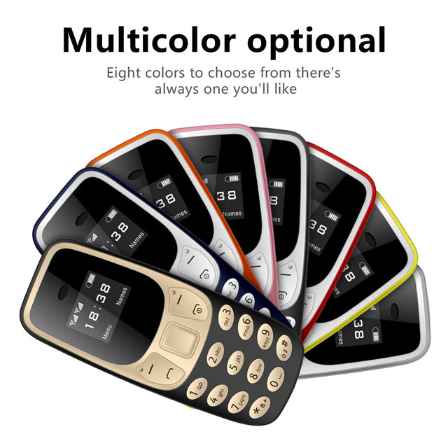
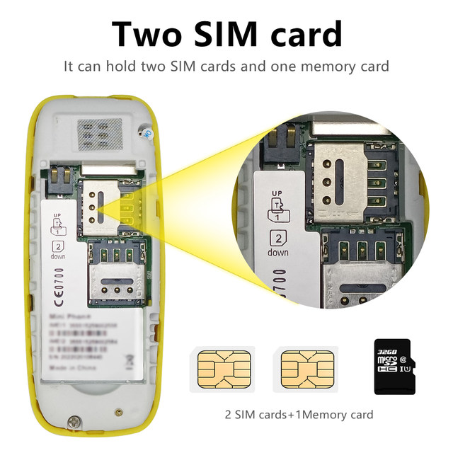
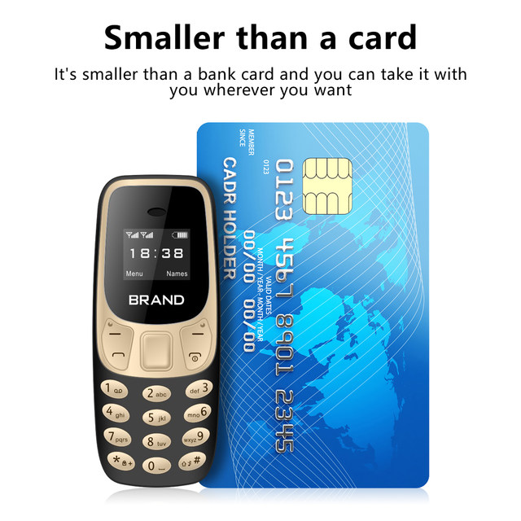
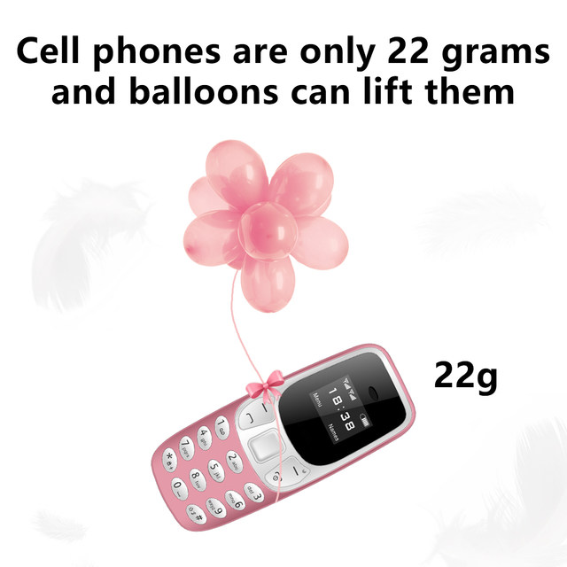
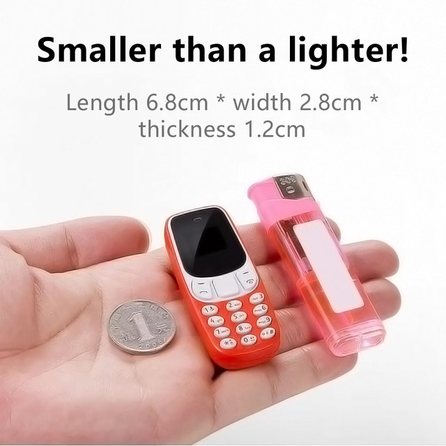
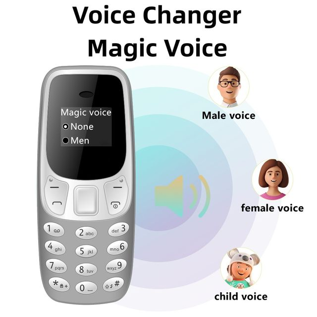
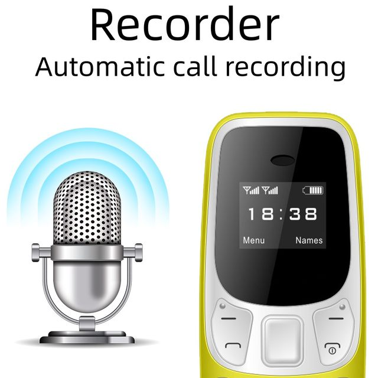
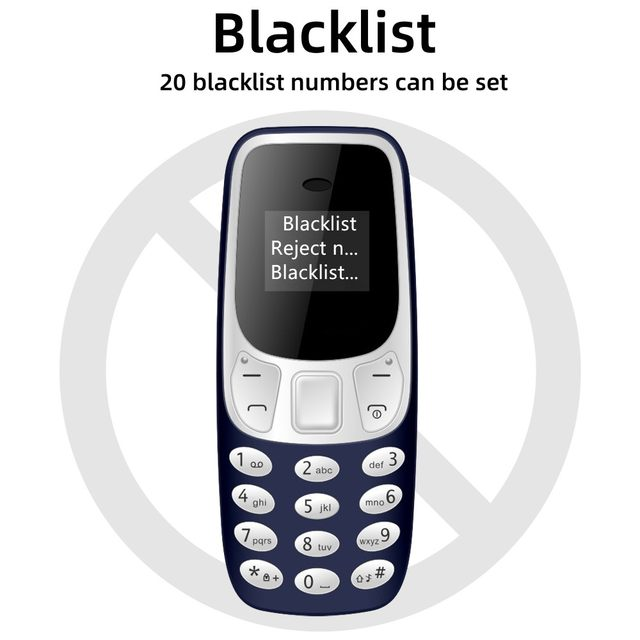
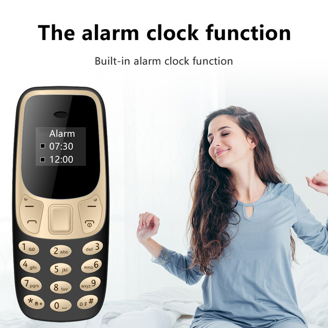
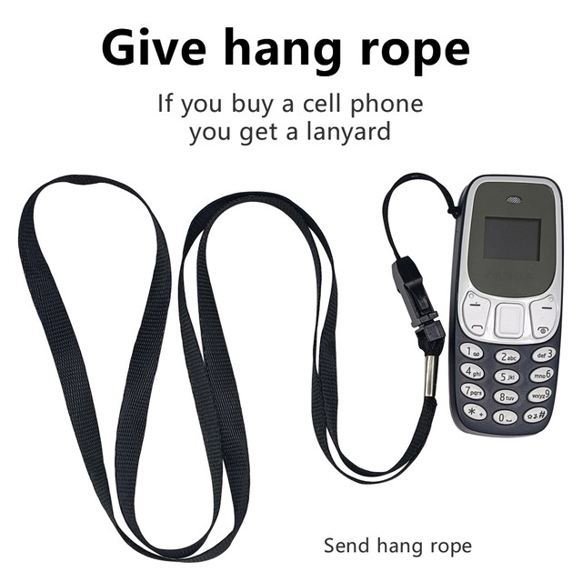
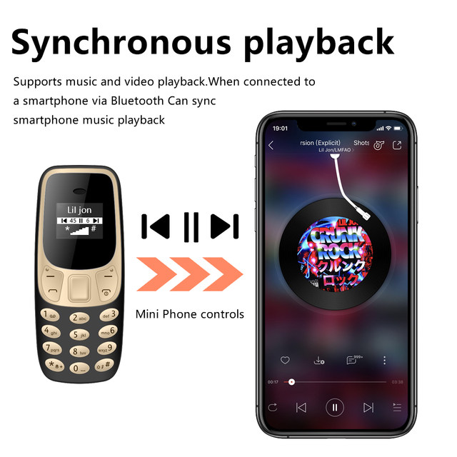
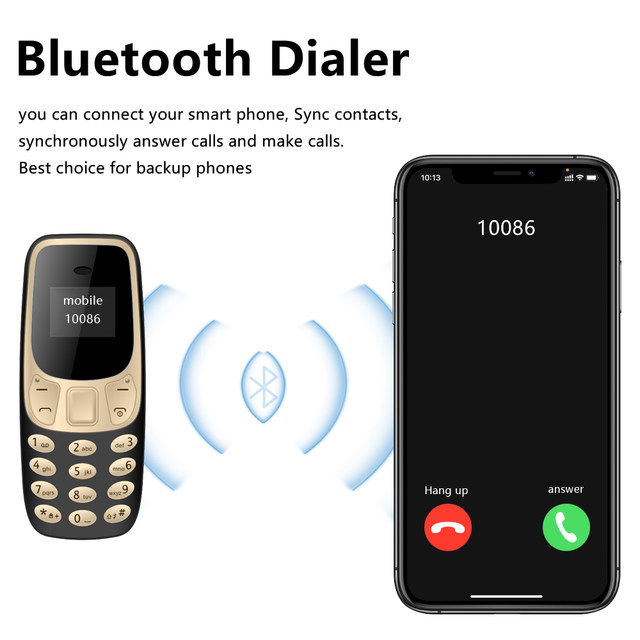
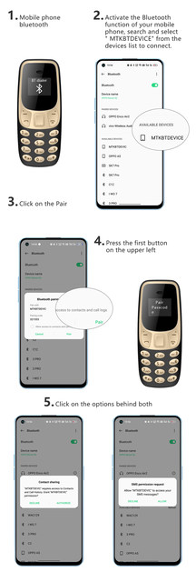
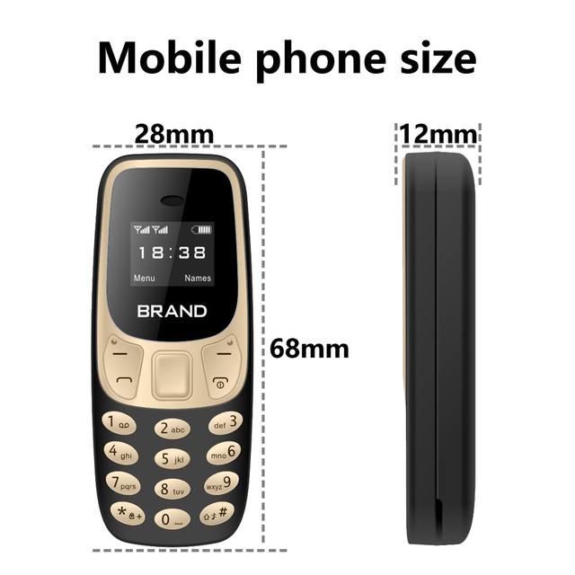
Please read me before ordering
1. Generally, Aliexpress system takes 24 hours to verify payment, then we usually ship within 24 to 48 hours.
2. We will declare a lower price on the invoice / account to help avoid customs fees if the package passes strict customs inspection. You still have to pay taxes to kick the habit. We will not bear the tariffs. Due to the refusal of customs clearance, the cost of returning the goods or the loss of the package will be borne by the customer.
3. If we select DHL, commissions for remote charges, customs fees or customs clearance or warehousing charges charged by DHL are not included.
4. Open the package in the presence of the postman. If the package is damaged or empty (stolen), please ask the post office to provide official documents, especially claim request documents.
5. Before using the mobile phone, open the back cover of the mobile phone, remove the battery and check whether there is a layer of insulating adhesive paper on the battery interface. Please remove it before use.
6. All test results of third party applications (Antutu, CPU-Z, etc.) are for reference only.
7. The product items shown on our website are close to the real colors, but with different lighting and display factors, there are certain colors.
8. If you have any problem, contact us.If you are satisfied with our products and services. Hope you can give us 5 star Reviews. Thank you